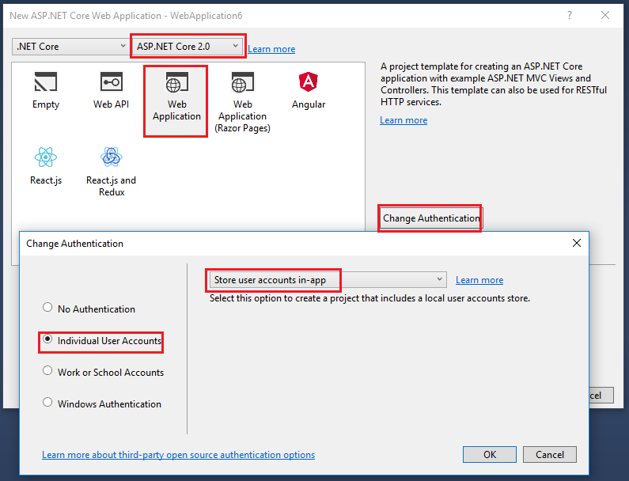
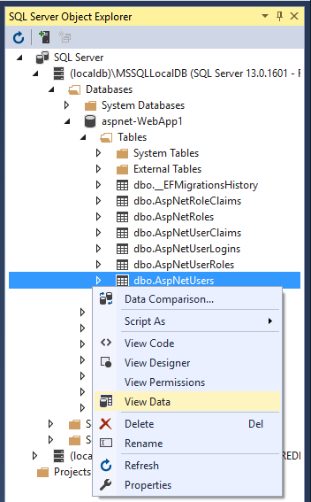
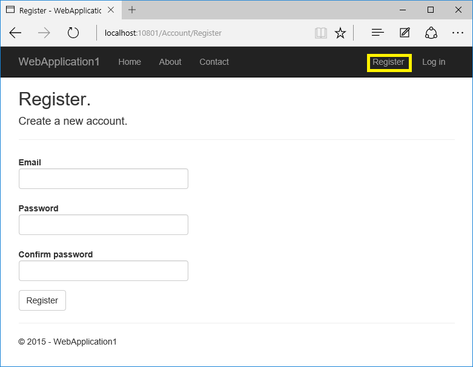
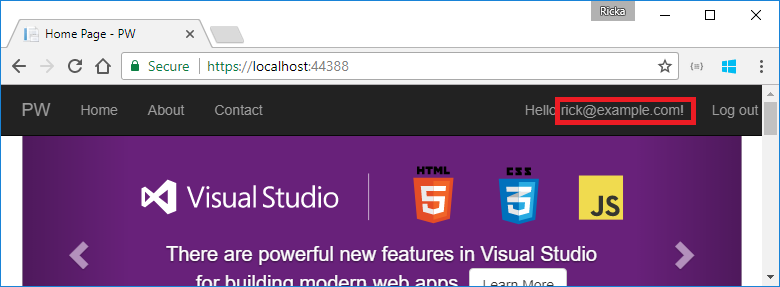
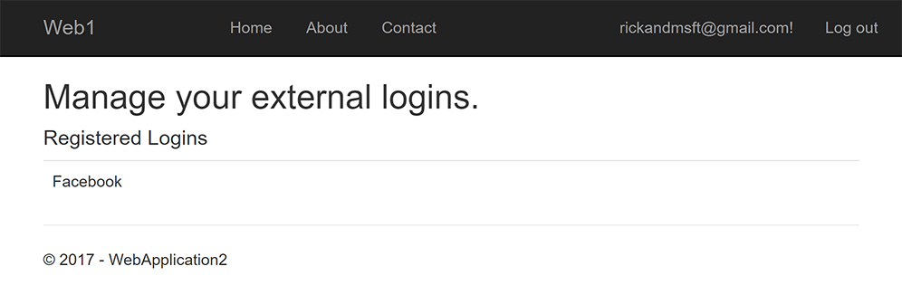

Account confirmation and password recovery in ASP.NET Core
This tutorial shows you how to build an ASP.NET Core app with email confirmation and password reset.
Create a New ASP.NET Core Project
This step applies to Visual Studio on Windows. See the next section for CLI instructions.
The tutorial requires Visual Studio 2017 Preview 2 or later.
- In Visual Studio, create a New Web Application Project.
- Select ASP.NET Core 2.0. The following image show .NET Core selected, but you can select .NET Framework.
- Select Change Authentication and set to Individual User Accounts.
- Keep the default Store user accounts in-app.

.NET Core CLI project creation for macOS and Linux
If you're using the CLI or SQLite, run the following in a command window:
dotnet new mvc --auth Individual
--auth Individualspecifies the Individual User Accounts template.- On Windows, add the
-uldoption. The-uldoption creates a LocalDB connection string rather than a SQLite DB. - Run
new mvc --helpto get help on this command.
Test new user registration
Run the app, select the Register link, and register a user. Follow the instructions to run Entity Framework Core migrations. At this point, the only validation on the email is with the [EmailAddress] attribute. After you submit the registration, you are logged into the app. Later in the tutorial, we'll change this so new users cannot log in until their email has been validated.
View the Identity database
- From the View menu, select SQL Server Object Explorer (SSOX).
- Navigate to (localdb)MSSQLLocalDB(SQL Server 13). Right-click on dbo.AspNetUsers > View Data:

Note the EmailConfirmed field is False.
You might want to use this email again in the next step when the app sends a confirmation email. Right-click on the row and select Delete. Deleting the email alias now will make it easier in the following steps.
Require SSL and setup IIS Express for SSL
See Enforcing SSL.
Require email confirmation
It's a best practice to confirm the email of a new user registration to verify they are not impersonating someone else (that is, they haven't registered with someone else's email). Suppose you had a discussion forum, and you wanted to prevent "yli@example.com" from registering as "nolivetto@contoso.com." Without email confirmation, "nolivetto@contoso.com" could get unwanted email from your app. Suppose the user accidentally registered as "ylo@example.com" and hadn't noticed the misspelling of "yli," they wouldn't be able to use password recovery because the app doesn't have their correct email. Email confirmation provides only limited protection from bots and doesn't provide protection from determined spammers who have many working email aliases they can use to register.
You generally want to prevent new users from posting any data to your web site before they have a confirmed email.
Update ConfigureServices to require a confirmed email:
public void ConfigureServices(IServiceCollection services)
{
services.AddDbContext<ApplicationDbContext>(options =>
options.UseSqlServer(Configuration.GetConnectionString("DefaultConnection")));
services.AddIdentity<ApplicationUser, IdentityRole>(config =>
{
config.SignIn.RequireConfirmedEmail = true;
})
.AddEntityFrameworkStores<ApplicationDbContext>()
.AddDefaultTokenProviders();
// Add application services.
services.AddTransient<IEmailSender, EmailSender>();
services.AddMvc();
services.Configure<AuthMessageSenderOptions>(Configuration);
}
config.SignIn.RequireConfirmedEmail = true;
The preceding line prevents registered users from being logged in until their email is confirmed. However, that line does not prevent new users from being logged in after they register. The default code logs in a user after they register. Once they log out, they won't be able to log in again until they register. Later in the tutorial we'll change the code so newly registered user are not logged in.
Configure email provider
In this tutorial, SendGrid is used to send email. You need a SendGrid account and key to send email. You can use other email providers. ASP.NET Core 2.x includes System.Net.Mail, which allows you to send email from your app. We recommend you use SendGrid or another email service to send email.
The Options pattern is used to access the user account and key settings. For more information, see configuration.
Create a class to fetch the secure email key. For this sample, the AuthMessageSenderOptions class is created in the Services/AuthMessageSenderOptions.cs file.
public class AuthMessageSenderOptions
{
public string SendGridUser { get; set; }
public string SendGridKey { get; set; }
}
Set the SendGridUser and SendGridKey with the secret-manager tool. For example:
C:\WebAppl\src\WebApp1>dotnet user-secrets set SendGridUser RickAndMSFT
info: Successfully saved SendGridUser = RickAndMSFT to the secret store.
On Windows, Secret Manager stores your keys/value pairs in a secrets.json file in the %APPDATA%/Microsoft/UserSecrets/
The contents of the secrets.json file are not encrypted. The secrets.json file is shown below (the Add This tutorial shows how to add email notifications through SendGrid, but you can send email using SMTP and other mechanisms. Install the See Get Started with SendGrid for Free to register for a free SendGrid account. The template has the code for account confirmation and password recovery. Find the Prevent newly registered users from being automatically logged on by commenting out the following line: The complete method is shown with the changed line highlighted: Run the web app, and test the account confirmation and password recovery flow. Run the app and register a new user  Check your email for the account confirmation link. See Debug email if you don't get the email. Select your user name in the browser:
 You might need to expand the navbar to see user name. The manage page is displayed with the Profile tab selected. The Email shows a check box indicating the email has been confirmed. If you can't get email working: Note: A security best practice is to not use production secrets in test and development. If you publish the app to Azure, you can set the SendGrid secrets as application settings in the Azure Web App portal. The configuration system is setup to read keys from environment variables. With the current templates, once a user completes the registration form, they are logged in (authenticated). You generally want to confirm their email before logging them in. In the section below, we will modify the code to require new users have a confirmed email before they are logged in. Update the Note: A security best practice is to not use production secrets in test and development. If you publish the app to Azure, you can set the SendGrid secrets as application settings in the Azure Web App portal. The configuration system is setup to read keys from environment variables. Note: This section applies only to ASP.NET Core 1.x. For ASP.NET Core 2.x, see this issue. To complete this section, you must first enable an external authentication provider. See Enabling authentication using Facebook, Google and other external providers. You can combine local and social accounts by clicking on your email link. In the following sequence, "RickAndMSFT@gmail.com" is first created as a local login; however, you can create the account as a social login first, then add a local login. Click on the Manage link. Note the 0 external (social logins) associated with this account. Click the link to another login service and accept the app requests. In the image below, Facebook is the external authentication provider:  The two accounts have been combined. You will be able to log on with either account. You might want your users to add local accounts in case their social log in authentication service is down, or more likely they have lost access to their social account.SendGridKey value has been removed.){
"SendGridUser": "RickAndMSFT",
"SendGridKey": "<key removed>"
}
Configure startup to use AuthMessageSenderOptions
AuthMessageSenderOptions to the service container at the end of the ConfigureServices method in the Startup.cs file:public void ConfigureServices(IServiceCollection services)
{
services.AddDbContext<ApplicationDbContext>(options =>
options.UseSqlServer(Configuration.GetConnectionString("DefaultConnection")));
services.AddIdentity<ApplicationUser, IdentityRole>(config =>
{
config.SignIn.RequireConfirmedEmail = true;
})
.AddEntityFrameworkStores<ApplicationDbContext>()
.AddDefaultTokenProviders();
// Add application services.
services.AddTransient<IEmailSender, EmailSender>();
services.AddMvc();
services.Configure<AuthMessageSenderOptions>(Configuration);
}
Configure the AuthMessageSender class
SendGrid NuGet package. From the Package Manager Console, enter the following the following command:Install-Package SendGridConfigure SendGrid
using Microsoft.Extensions.Options;
using SendGrid;
using SendGrid.Helpers.Mail;
using System.Threading.Tasks;
namespace WebPW.Services
{
public class EmailSender : IEmailSender
{
public EmailSender(IOptions<AuthMessageSenderOptions> optionsAccessor)
{
Options = optionsAccessor.Value;
}
public AuthMessageSenderOptions Options { get; } //set only via Secret Manager
public Task SendEmailAsync(string email, string subject, string message)
{
return Execute(Options.SendGridKey, subject, message, email);
}
public Task Execute(string apiKey, string subject, string message, string email)
{
var client = new SendGridClient(apiKey);
var msg = new SendGridMessage()
{
From = new EmailAddress("Joe@contoso.com", "Joe Smith"),
Subject = subject,
PlainTextContent = message,
HtmlContent = message
};
msg.AddTo(new EmailAddress(email));
return client.SendEmailAsync(msg);
}
}
}
Enable account confirmation and password recovery
[HttpPost] Register method in the AccountController.cs file.await _signInManager.SignInAsync(user, isPersistent: false);
[HttpPost]
[AllowAnonymous]
[ValidateAntiForgeryToken]
public async Task<IActionResult> Register(RegisterViewModel model, string returnUrl = null)
{
ViewData["ReturnUrl"] = returnUrl;
if (ModelState.IsValid)
{
var user = new ApplicationUser { UserName = model.Email, Email = model.Email };
var result = await _userManager.CreateAsync(user, model.Password);
if (result.Succeeded)
{
_logger.LogInformation("User created a new account with password.");
var code = await _userManager.GenerateEmailConfirmationTokenAsync(user);
var callbackUrl = Url.EmailConfirmationLink(user.Id, code, Request.Scheme);
await _emailSender.SendEmailConfirmationAsync(model.Email, callbackUrl);
// await _signInManager.SignInAsync(user, isPersistent: false);
_logger.LogInformation("User created a new account with password.");
return RedirectToLocal(returnUrl);
}
AddErrors(result);
}
// If we got this far, something failed, redisplay form
return View(model);
}
Register, confirm email, and reset password
View the manage page


Test password reset
Debug email
Prevent login at registration
[HttpPost] Login action in the AccountController.cs file with the following highlighted changes.//
// POST: /Account/Login
[HttpPost]
[AllowAnonymous]
[ValidateAntiForgeryToken]
public async Task<IActionResult> Login(LoginViewModel model, string returnUrl = null)
{
ViewData["ReturnUrl"] = returnUrl;
if (ModelState.IsValid)
{
// Require the user to have a confirmed email before they can log on.
var user = await _userManager.FindByEmailAsync(model.Email);
if (user != null)
{
if (!await _userManager.IsEmailConfirmedAsync(user))
{
ModelState.AddModelError(string.Empty,
"You must have a confirmed email to log in.");
return View(model);
}
}
// This doesn't count login failures towards account lockout
// To enable password failures to trigger account lockout,
// set lockoutOnFailure: true
var result = await _signInManager.PasswordSignInAsync(model.Email,
model.Password, model.RememberMe, lockoutOnFailure: false);
if (result.Succeeded)
{
_logger.LogInformation(1, "User logged in.");
return RedirectToLocal(returnUrl);
}
if (result.RequiresTwoFactor)
{
return RedirectToAction(nameof(SendCode),
new { ReturnUrl = returnUrl, RememberMe = model.RememberMe });
}
if (result.IsLockedOut)
{
_logger.LogWarning(2, "User account locked out.");
return View("Lockout");
}
else
{
ModelState.AddModelError(string.Empty, "Invalid login attempt.");
return View(model);
}
}
// If we got this far, something failed, redisplay form
return View(model);
}
Combine social and local login accounts